NUESTROS CLIENTES
Empresas que confían en nosotros
Nos enorgullece brindar nuestro servicio y experiencia a empresas que confían en Taller Camello.

TALLER CAMELLO SAS
Cuidamos tu vehículo con profesionalismo, experiencia y compromiso.
En Taller Camello SAS trabajamos cada día para brindar un servicio responsable, transparente y de calidad, ofreciendo soluciones confiables para el mantenimiento y reparación de vehículos.
Nos enfocamos en atender cada vehículo con compromiso, experiencia y dedicación, buscando que nuestros clientes se sientan seguros y respaldados en cada visita.
En Taller Camello nos comprometemos con cada vehículo que llega a nuestras instalaciones, brindando atención responsable, transparente y enfocada en la calidad del servicio.
Contamos con experiencia en mantenimiento y reparación de vehículos, ofreciendo un servicio respaldado por conocimiento y compromiso.
Trabajamos con transparencia y compromiso para que nuestros clientes se sientan seguros al dejar su vehículo en nuestras manos.
Buscamos ofrecer soluciones adecuadas para las necesidades de cada vehículo, trabajando con responsabilidad y dedicación.
Escuchamos a nuestros clientes para brindar una atención cercana, clara y profesional en cada servicio.
Cuidamos cada detalle de tu vehículo con experiencia, responsabilidad y atención personalizada.
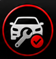
Realizamos revisiones y mantenimientos periódicos para conservar el buen funcionamiento de tu vehículo y prevenir futuras fallas.
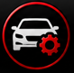
Identificamos y solucionamos diferentes fallas mecánicas para recuperar el correcto funcionamiento de tu vehículo.
Utilizamos equipos de diagnóstico para detectar fallas electrónicas y obtener información precisa sobre el estado de tu vehículo.
Conoce nuestras instalaciones, vehículos y algunos de los trabajos realizados por Taller Camello SAS.
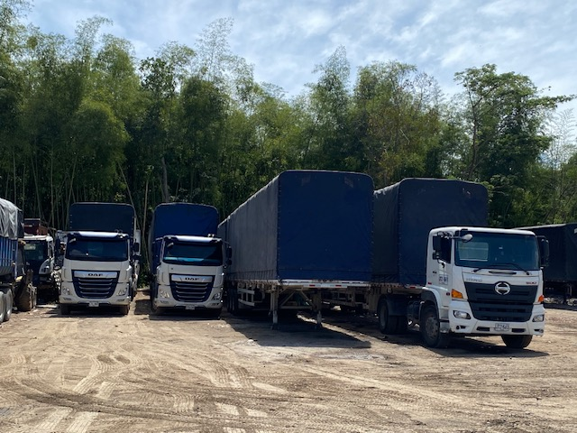
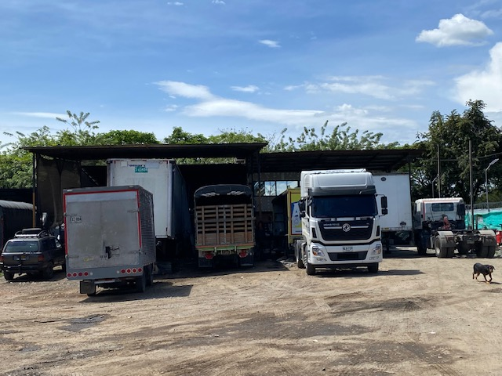
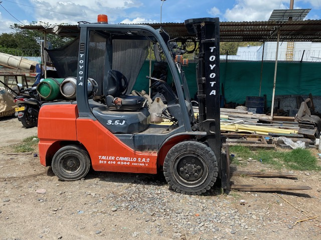
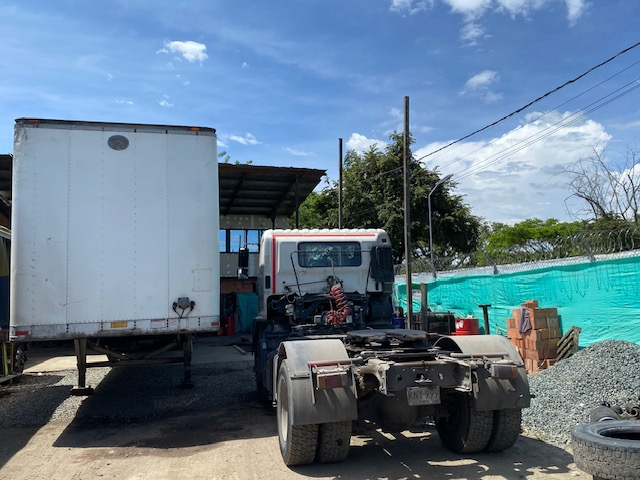
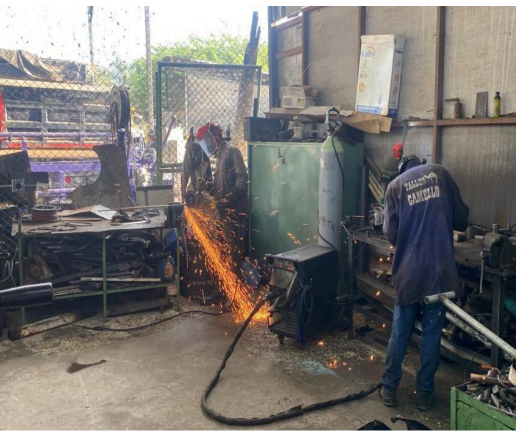
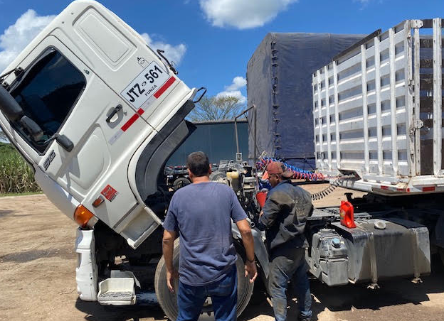
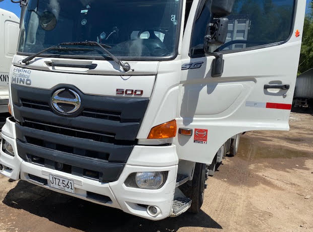
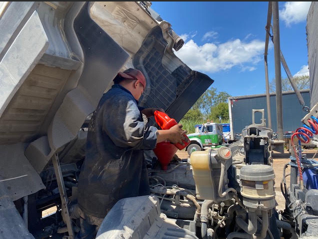
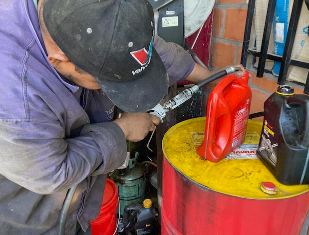
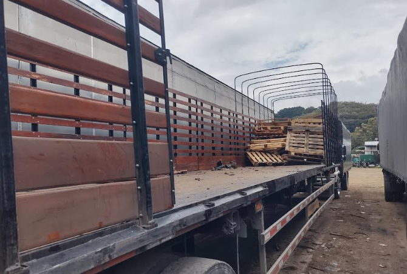
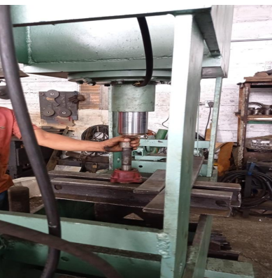
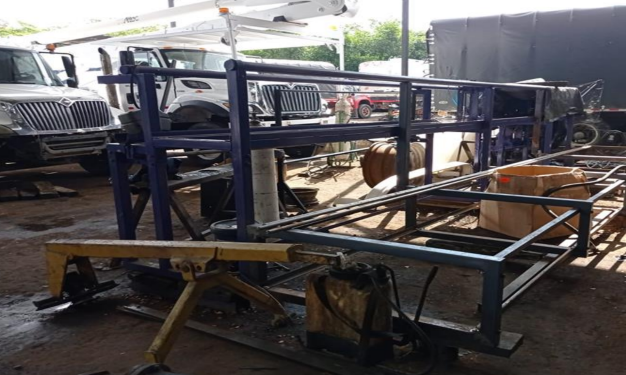
Nos enorgullece brindar nuestro servicio y experiencia a empresas que confían en Taller Camello.
Estamos listos para atenderte y ayudarte con las necesidades de mantenimiento y reparación de tu vehículo.
📍 Ubicación:
Calle 10 Lote 1 Hacienda Cuva
Vía Cartago-Zaragoza
📞 Teléfono:
313 614 4344
✉️ Correo electrónico:
tallercamello31@gmail.com
🕐 Horario de atención:
Lunes a viernes: 7:30 a. m. - 5:30 p. m.
Sábados: 7:30 a. m. - 11:00 a. m.